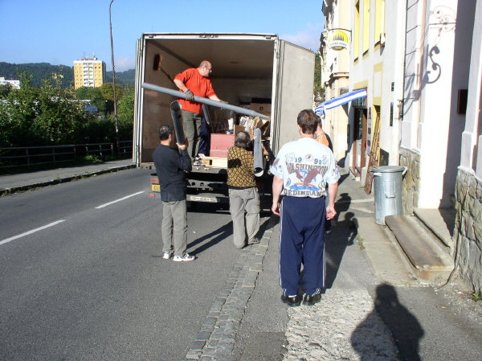
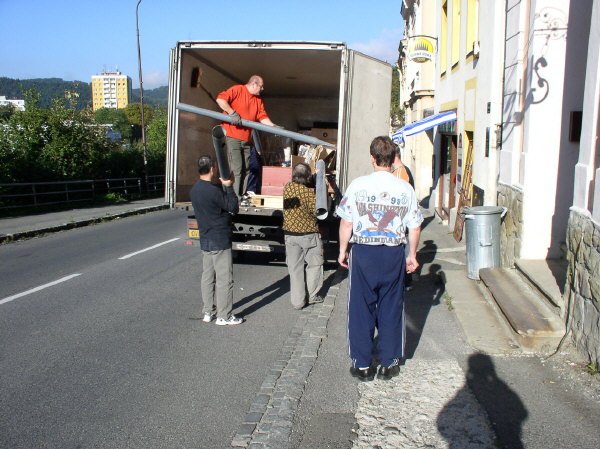
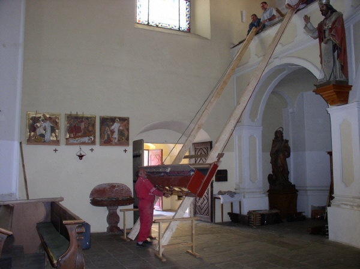

Nakládání nástroje ve Vsetíně.
Stavba nástroje probíhala ve vsetínské dílně v průběhu
celé první poloviny roku. Byly vyrobeny všechny vzdušnice, měchy, hrací
stůl a vše bylo zkušebně propojeno tak, aby mohl být nástroj vyzkoušen
a provedena základní intonace a předladění píšťal. |
Vzdušnice prvního manuálu s píšťalami při zkouškách nástroje v dílně. Odzkoušený nástroj byl rozebrán, zabalen a připraven na 250 kilometrovou cestu do Brtnice. 19. září bylo hotovo a mohlo se začít nakládat. Součástí jsou stovky, některé malé, jiné velké a pořádně těžké… |
 Nakládání nástroje ve Vsetíně. |
Nejtěžší fází dopravy nástroje nebyl jeho převoz,
ale vyzvednutí na kůr v brtnickém kostele. Hrana zábradlí je ve výšce
6 m, možnosti použití mechanizace silně omezené. S využitím vědomostí
našich předků (nakloněná rovina) a síly svalů byl celý nástroj přestěhován
a vzdušnice usazena do skříně během cca dvou hodin: |

Příprava vzdušnice prvního manuálu k vyzvednutí a průběh zvedání. Přestože je většina demontovatelných součástí odstraněna, váží tento díl přes 300 kg! |
 Ve
skříni nástroje musela být vzdušnice přesně usazena na nosníky. Manipulace
s ní byla velmi obtížná nejen vzhledem k její hmotnosti, ale také z důvodu
omezeného prostoru, absenci místa pro stoupnutí atd. Přestože umístění
tohoto dílu nemohlo být předem odzkoušeno, vše pasovalo na milimetry přesně. Ve
skříni nástroje musela být vzdušnice přesně usazena na nosníky. Manipulace
s ní byla velmi obtížná nejen vzhledem k její hmotnosti, ale také z důvodu
omezeného prostoru, absenci místa pro stoupnutí atd. Přestože umístění
tohoto dílu nemohlo být předem odzkoušeno, vše pasovalo na milimetry přesně. V následujících dnech pokračovala instalace varhan montáží vzduchového
hospodářství, traktury, elektroinstalace, ventilátoru a dalších vzdušnic.
Teprve pak bylo možné začít vkládat první píšťaly, intonovat a ladit.
V následujících dnech pokračovala instalace varhan montáží vzduchového
hospodářství, traktury, elektroinstalace, ventilátoru a dalších vzdušnic.
Teprve pak bylo možné začít vkládat první píšťaly, intonovat a ladit. |
Ve spodní části (postamentu) skříně je kompletní
vzduchové hospodářství nástroje. To se skládá ze zdroje stlačeného vzduchu
(elektrického ventilátoru), jeho zásobníků (dvojice měchů pro první manuál
a druhý manuál s pedálem samostatně ve společné skříni) a regulace tlaku
(samostatných regulátorů pro každý měch).
Ventilátor
je umístěn v tlumící skříni na podlaze kůru. Vzduch z něj o tlaku přes
120 mm vodního sloupce je veden vzduchovodem kruhového průřezu vzhůru
k měchům přes regulátory. Ty udržují stabilní tlak 70 mm v horním, plovákovém
měchu pro první manuál a 80 mm v dolním, klínovém měchu pro druhý manuál.
Před regulátory je ještě odebírán vzduch o plném tlaku pro „pohon“ tahacích
měchů pro posun zásuvek ve vzdušnici prvního manuálu. Přímo na měchu prvního
manuálu je výpustné tremolo. |
 V
nástroji je použit ventilátor maďarské výroby, vyznačující se mimořádně
tichým chodem. Má třífázový asynchronní elektromotor s kluznými ložisky
o výkonu pouze 350W a vestavěnou tepelnou ochranu. V
nástroji je použit ventilátor maďarské výroby, vyznačující se mimořádně
tichým chodem. Má třífázový asynchronní elektromotor s kluznými ložisky
o výkonu pouze 350W a vestavěnou tepelnou ochranu. |
 Celá
elektroinstalace nástroje je umístěna v boční části postamentu. V horní
části je výkonový modul pro řízení elektromagnetů ve vzdušnici, v dolní
části napájecí zdroj 12 V a obvody spínání a ochrany elektromotoru
ventilátoru. Z praktických a bezpečnostních důvodů je celý stůl (včetně
osvětlení pedálu) napájen pouze malým napětím (12 V střídavých i
stejnosměrných). Celá
elektroinstalace nástroje je umístěna v boční části postamentu. V horní
části je výkonový modul pro řízení elektromagnetů ve vzdušnici, v dolní
části napájecí zdroj 12 V a obvody spínání a ochrany elektromotoru
ventilátoru. Z praktických a bezpečnostních důvodů je celý stůl (včetně
osvětlení pedálu) napájen pouze malým napětím (12 V střídavých i
stejnosměrných). |
Vzdušnice a píšťaly. |

Pohled na vzdušnice seshora, dlouhé tmavší lišty s otvory jsou zásuvky. |

Přesun zásuvek zajišťují tahací měchy (na obrázku
je detail napojení hřídelek měchů na zásuvky). Toto řešení je jednodušší
z hlediska zapojení traktury (požadavku na elektrický příkon) než přímé
ovládání zásuvek tyčovými elektromagnety a ve srovnání s nimi i méně hlučné.
Měchy jsou napájeny plným tlakem z ventilátoru. |
Pohled na tahací měchy zespodu, řízení otvírání a
zavírání zajišťují páčkové elektromagnety, ovládající cívky (ploché ventily). |

Osazení píšťalnic s píšťalovými stoličkami na vzdušnici
prvního manuálu. |
Prospektové zinkové píšťaly jsou pro sjednocení a
vylepšení vzhledu stříkány stříbřenkou. |

Levá část prospektu a vzdušnice s tahacími měchy zásuvek. |
V zadní části varhan jsou dřevěné píšťaly nejnižší
oktávy pedálu (12 píšťal na samostatné Unitové vzdušnici). |

Celkový pohled do píšťaliště hotových varhan. Vlevo
prospekt, vzdušnice prvního manuálu, lávka (chodník) pro ladění, vzdušnice
druhého manuálu a pedálu a úplně vpravo vzdušnice pro 12 píšťal kontraoktávy
šestnáctistopového rejstříku pedálu. |
Stavba nástroje na místě trvala varhanářskému mistrovi Jiřímu Vaculínovi a jeho pomocníkům Petru Bernatovi (elektro a traktura) a Janu Markovi (ladění a intonace) přibližně dva týdny. Během této doby byl nástroj sestaven, naintonován a naladěn. 23. října roku 2005, v den výročí svěcení chrámu, byly varhany slavnostně požehnány a předány brtnické farnosti. Při této příležitosti přednesla na nový nástroj koncert prof. Irena Chřibková, varhanice baziliky sv. Jakuba v Praze.
|

Slavnostní žehnání nových varhan 23.10.2005, P. Jaroslav
Svoboda.
Ať slouží nový nástroj Bohu ke chvále a Brtnici ku prospěchu. Ostrava, listopad 2005
Pohled od varhan západním oknem kostela na zámecký kostel v Brtnici. Varhany Vaculín Opus 7. – Jiří VACULÍN,
varhanářský mistr ze Vsetína |
Na předchozích stránkách naleznete úvod a dispozici nástroje a jeho podrobný popis. Na samostatné stránce pak několik fotografií a dispozici barokních varhan v zámeckém kostele blahoslavené Juliany. ©2005 - Ing. Petr Bernat. |